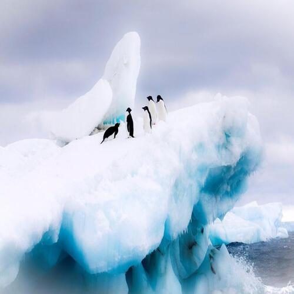

Hoy

Fecha: 30 de Junio, 2023
Ciudad: Merida
Temperatura maxima: 35°C
Temperatura minima: 25°C
Viento: 5km/h
Probabilidad de lluvia: 82%
Mañana
Fecha: 01 de Julio, 2023
Ciudad: Merida
Temperatura maxima: 34°C
Temperatura minima: 30°C
Viento: 4km/h
Probabilidad de lluvia: 0%
2 de julio

Fecha: 02 de Julio, 2023
Ciudad: Merida
Temperatura maxima: 36°C
Temperatura minima: 26°C
Viento: 3km/h
Probabilidad de lluvia: 50%
3 de julio
Fecha: 3 de Julio, 2023
Ciudad: Merida
Temperatura maxima: 32°C
Temperatura minima: 22°C
Viento: 6km/h
Probabilidad de lluvia: 80%
4 de julio
Fecha: 4 de Julio, 2023
Ciudad: Merida
Temperatura maxima: 33°C
Temperatura minima: 21°C
Viento: 3km/h
Probabilidad de lluvia: 70%
4 de julio
Fecha: 4 de Julio, 2023
Ciudad: Merida
Temperatura maxima: 33°C
Temperatura minima: 21°C
Viento: 3km/h
Probabilidad de lluvia: 70%
4 de julio
Fecha: 4 de Julio, 2023
Ciudad: Merida
Temperatura maxima: 33°C
Temperatura minima: 21°C
Viento: 3km/h
Probabilidad de lluvia: 70%
4 de julio
Fecha: 4 de Julio, 2023
Ciudad: Merida
Temperatura maxima: 33°C
Temperatura minima: 21°C
Viento: 3km/h
Probabilidad de lluvia: 70%
Tsunami arrasa la costa de Malvidas
Riesgo de tsunami para las Islas Malvinas por deslizamientos de tierra submarinos .Las Islas Malvinas están en riesgo de tsunamis causados por deslizamientos de tierra bajo el agua, según la evidencia de eventos prehistóricos encontrada en el denominado canal Malvinas, al sur del archipiélago ubicado en el Atlántico sur. Los deslizamientos de tierra están en la misma ubicación y los científicos dicen que el Frente Subantártico, una rama de una de las corrientes más fuertes de la Tierra, estaba detrás de la formación de los deslizamientos de tierra, según los científicos.
Leer más
Tormenta solar se aproxima en el año 2060
La expulsión de una enorma bola de plasma del Sol prendió las alarmas ante la advertencia de la llegada de una tormenta solar, que impactará a la Tierra en las próximas horas. Este fenómeno ocurre cuando el Sol expulsa una nube de partículas cargadas y fluctuaciones electromagnéticas, que forman una tormenta solar o eyección de masa coronal que se dirige en este momento en dirección al planeta Tierra. Sin embargo, no existe un peligro inminente frente al CME que podría provocar una llamada tormenta geomagnética y podría dar un golpe de refilón al campo magnético de nuestro planeta.
Leer más
Grecia, Sumergida en el Barro tras Paso de la Tormenta Daniel
El centro de Grecia sigue sumergido en el barro, ocho días después de que la tormenta Daniel azotara la región y provocará inundaciones y riadas que ya han causado 15 víctimas mortales, mientras que miles de personas permanecen sin electricidad o suministro de agua potable. Pese a que las aguas empezaron a retroceder este lunes, en las zonas más afectadas en las regiones de Karditsa, Trikala y Larissa, el acceso a varios pueblos solo es posible con balsas y botes, pues siguen inundados. En esas zonas hay escasez de medicamentos, comida y agua potable, según las autoridades regionales, advirtieron del riesgo de brotes de enfermedades infecciosas aumenta debido a las masas de agua estancada y los miles de cadáveres de animales de ganado que se ahogaron en ellas durante las riadas. La parte de la autovía nacional que transcurre por la región y une el sur con el norte de Grecia sigue anegada por cuarto día consecutivo, mientras que los daños en la infraestructura ferroviaria también son extensos.
Leer más
La capa de hielo marino de la Antártida Occidental, estaría en vías de colapso

El calentamiento global hasta la fecha podría ser ya suficiente para desencadenar la lenta pero segura pérdida de la capa de hielo de la Antártida Occidental en los próximos cientos o miles de años. Es la conclusión de un equipo de expertos de institutos de investigación europeos, que ha realizado la primera inspección sistemática de estabilidad del estado actual de la capa de hielo de la Antártida Occidental. No obstante, todavía no se han encontrado indicios de un retroceso irreversible. El principal motor de la pérdida de hielo en la Antártida Occidental es el agua oceánica relativamente cálida que amplifica el deshielo bajo las plataformas de hielo, que son las extensiones flotantes de la capa de hielo en tierra. El deshielo de estas plataformas puede aumentar la pérdida de hielo, ya que acelera las secciones en tierra de la capa de hielo. Por ello, el margen antártico, con sus líneas de tierra --la zona en la que se conectan el hielo en tierra y el flotante, es un indicador clave de la salud de la capa de hielo.
Leer más